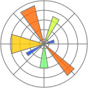
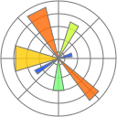

Gestión de proyectos de IA
Tarea del curso de especialización
Gestión de un proyecto de clasificación de flores utilizando varios algoritmos de aprendizaje automático diferentes, realizado para aprender a gestionar proyectos de IA.


Hola soy Tòfol Cano, desarrollador de aplicaciones web recientemente titulado en un curso de especialización en Inteligencia Artificial y Big Data. Estoy interesado en todo lo que tenga que ver con el mundo de la programación de Inteligencia Artificial; la gestión, visualización e análisis del Big Data y la integración de ambas tecnologías para la creación de soluciones dinámicas.

Soy un desarrollador de aplicaciones web recientemente especializado en Inteligencia Artificial y Big Data a través del curso de especialización del instituto IEDIB con una gran pasión por el aprendizaje. Estoy interesado en cambiar el rumbo de mi carrera profesional para orientarla al prometedor mundo de la programación de Inteligencia Artificial y el de la ciencia de datos y Big Data.
Estoy actualmente continuando mi formación de manera autodidacta en varias plataformas educativas en línea como Coursera, EdX, Udemy, etc. En mi tiempo libre estoy trabajando en ampliar mi portfolio con pequeñas demos interactivas que estarán disponibles en ésta web y cuyo codigo será publicado en mi perfil de GitHub.
También tengo el título de formación profesional de grado superior en desarrollo de aplicaciones web y el título de grado medio en sistemas microinformáticos y redes.
A continuación, se puede ver una pequeña muestra —en forma de mini-proyectos interactivos— de las habilidades que he adquirido en las tareas del curso de especialización en Inteligencia Artificial y Big Data. Haciendo clic en su imagen, te dirigirá a su respectiva aplicación de Streamlit, que he creado para explicar el funcionamiento y permitir la interacción con el programa.
Gestión de un proyecto de clasificación de flores utilizando varios algoritmos de aprendizaje automático diferentes, realizado para aprender a gestionar proyectos de IA.
Creación de un cluster sobre Docker con 1 nodo maestro, 3 nodos workers y un nodo para JupyterLab para analizar datos sobre él en otras tareas del curso, realizado para aprender a crear un cluster sobre Docker.


 



En esta experiencia me he familiarizado con el uso de PHP, HTML, CSS, JS y peticiones AJAX a sus apis.
Durante ese año de experiencia profesional —obtenida gracias al "SOIB qualificats primera experiència"— en colaboración con mis compañeros de trabajo y con la ayuda de mi supervisor proporcioné a la empresa los siguientes servicios:

He creado un "chatbot" de QA utilizando un modelo de Hugging Face llamado "deepset/roberta-base-squad2" que conoce todas mis habilidades, experiencia laboral y tiene una copia resumida de mi currículum. Puedes usarlo para hacer preguntas sobre mí para tener una mejor idea de quién soy y lo que he hecho. Por ahora sólo entiende inglés así que tendrás que preguntarle en inglés.
Está desarrollado y desplegado en los servidores de stremlit por lo que cada vez que cargas la página tienes que esperar un rato a que arranque el servidor e instale las dependencias... Es la desventaja de no pagar por mi propio hosting.
También puedes descargarte mi currículum aquí si quieres echarle un vistazo. Actualmente estoy buscando nuevas oportunidades, así que si tienes un proyecto para el que crees que encajaría bien, ¡ponte en contacto conmigo!
Descargar currículumSi tienes alguna pregunta o quieres ponerte en contacto conmigo, no dudes en hacerlo a través del siguiente formulario o de mis redes sociales.